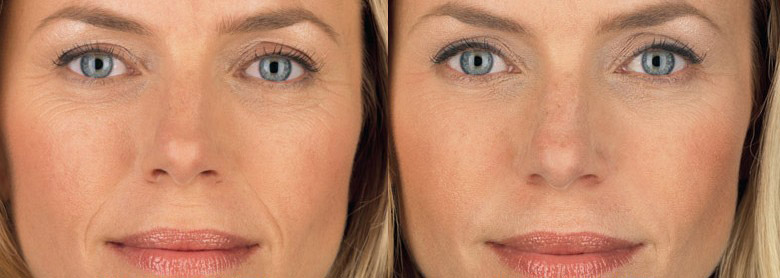

Γειά σε όλους! Κορίτσια, θέλω να μοιραστώ τα χαρούμενα νέα μου - ο σύζυγός μου είπε χθες ότι σκέφτεται για το τρίτο παιδί. Αλλά πριν από έξι μήνες ήμασταν στα πρόθυρα του διαζυγίου, μπορείτε να φανταστείτε; Η κατάσταση σώθηκε από μια τυχαία συνάντηση με την φίλη μου και .. ένα μικρό σωληνάριο anti-age κρέμας . Αλλά όλα από την αρχή.
Από την κούκλα σε ασχημούλα
Στο κολέγιο, ήμουν το πιο όμορφο κορίτσι. Οι φίλες μου ζήλευαν, είχα σγουρά μαύρα μαλλιά, στήθη τρίτου μεγέθους, λεπτή μέση, όμορφο πρόσωπο ... Και γενικά δεν έβαζα μακιγιάζ, γιατί ακόμη και κατά τη διάρκεια του προεμμηνορροϊκού συνδρόμου το δέρμα μου παρέμεινε φρέσκο και λαμπερό, χωρίς κανένα σπυράκι. Τα αγόρια τρελένονταν για αυτή τη φυσική ομορφιά και πήγαινα για ραντεβού σχεδόν κάθε βράδυ. Αλλά αυτά ήταν έτσι, τίποτα σοβαρό.

Αλλά μια μέρα ένα νέο αγόρι ήρθε στην ομάδα μας. Όμορφος και σιωπηλός, καθόταν συνεχώς στις σκέψεις του, και δυστυχώς, δεν μου έδινε καθόλου προσοχή. Αλλά εμένα μου άρεσε από την πρώτη στιγμή! Είχα πάντα μια αδυναμία για τόσο σκληρούς άντρες, γι 'αυτό αποφάσισα να ενεργήσω. Άλλαξε ελαφρώς το στυλ των ρούχων, και αντί για φούστες, που μετά βίας κάλυπταν τον ποπό μου, άρχισα να φοράω μακριά casual φορέματα, να διαβάζω περισσότερα. Και όταν τον συνάντησα σε ένα πάρτι, είπα άνετα μια φράση του αγαπημένου του συγγραφέα - και μιλούσαμε μέχρι το πρωί, χωρίς να παρατηρήσουμε κανέναν. Και από εκείνη τη στιγμή δεν χωρίσαμε ποτέ. Με εκπλήσσει το πόσο παθιασμένη ήταν η σχέση μας, γιατί με την πρώτη ματιά, ο Σάκης ήταν κρύος και επιφυλακτικός. Μετά από μερικούς μήνες αρχίσαμε να ζούμε μαζί, ύστερα αρραβώνας, γάμος ... Και τώρα τα δύο μικρά παιδιά μας τρέχουν γύρω από το σαλόνι - ‘Έλενα και Ιωάννα.
Και όλα θα ήταν τέλεια, αν όχι ένα γεγονός - Έχω αλλάξει πολύ. Δύο εγκυμοσύνες έκαναν τη δουλειά τους - το στήθος χαλάρωσε, η μέση εξαφανίστηκε, το δέρμα επιδεινώθηκε. Μερικές φορές, ενώ ο σύζυγός μου ήταν στη δουλειά, άνοιγα το άλμπουμ με τις φωτογραφίες που ήμουν φοιτήτρια και δεν μπορούσα να συγκρατήσω τα δάκρυα. Στον καθρέφτη τώρα και σε αυτές τις φωτογραφίες είμαι δύο διαφορετικοί άνθρωποι. Είδα ότι ο Σάκης άρχισε να μου φέρεται διαφορετικά, να εξαφανίζεται στη δουλειά, να αρνείται το σεξ. Δεν τον κατηγορώ, γιατί ακόμη και εγώ δεν θα ήθελα τον εαυτό μου. Δεν είχα φίλες, γιατί στην αρχή γοητεύτηκα από τον Σάκη , και όταν γέννησα τα κορίτσια, όλες οι εξόδους μου από το σπίτι ήταν για μια βόλτα με τις κόρες μου ή στο σουπερμάρκετ για ψώνια. Και για να είμαι ειλικρινής, θα ντρεπόμουν να συναντήσω τους παλιούς γνωστούς μου σε αυτήν τη φόρμα ... Αλλά μια μέρα, επιστρέφοντας από το κατάστημα με τον άντρα μου, συναντήσαμε τον συνάδελφό του και με πήρε για τη μητέρα του Σάκη !!! Τι θα μπορούσε να είναι πιο ταπεινωτικό για μια γυναίκα; Μου φαίνεται- τίποτα. Και αποφάσισα ότι πρέπει να κάνω κάτι.
Δοκίμασα τα πάντα για να μην χάσω τον αγαπημένο μου
Άρχισα να κάνω κάτι ασκήσεις στο σπίτι, και με τις κόρες μου, αντί να βλέπουμε κινούμενα σχέδια, ξεκινήσαμε να παίζουμε μπάλα ή μπάντμιντον στο πάρκο. Άρχισα να προσέχω επίσης τη διατροφή μου. Αποδείχθηκε πιο εύκολο από ό, τι νόμιζα, γιατί πάντα μαγείρευα καλά και τώρα μπορείτε να βρείτε πολλές απλές συνταγές στο Διαδίκτυο. Σε γενικές γραμμές,άρχισα να αδυνατίζω. Και σε 8 μήνες επέστρεψα στην κανονική μου κατάσταση. Φυσικά, τα χρόνια παίρνουν το φόρο τους και το σώμα δεν ήταν το ίδιο όπως στο κολέγιο. Προσπάθησα με όλη μου τη δύναμη να απαλλαγώ από την κυτταρίτιδα και να μειώσω κάπως τις ραγάδες, μέχρι που μια μέρα είδα το πρόσωπό μου από κοντά. Ναι, το είδα, γιατί τους τελευταίους μήνες κοιτούσα αποκλειστικά κάτω από το λαιμό. Μια εξαντλημένη γυναίκα περίπου 50 ετών με κοίταζε - το πρόσωπό της ήταν καλυμμένο με ρυτίδες και κηλίδες, σακούλες κάτω από τα μάτια, το δέρμα ήταν λείο και γκρι, ακόμη και το περίγραμμα του προσώπου ήταν χαλαρό. Έπαθα σοκ - είναι αυτό το αποτέλεσμα της γρήγορης απώλειας βάρους ή ήμουν και πριν έτσι, απλώς στο πλαίσιο του υπερβολικού βάρους, τα προβλήματα με το πρόσωπο δεν ήταν τόσο αισθητά;
Τρομοκρατημένη,βγήκα από το μαγαζί, τελικά μη αγοράζοντας αυτά τα πολυτελές εσώρουχα για τα οποία ήρθα. Και φυσικά, αυτή ήταν η τέλεια στιγμή για να συναντήσω μια φίλη από το κολέγιο - ψώνιζε στο ίδιο κατάστημα εσωρούχων. Η Κατερίνα δεν ήταν ποτέ όμορφη, αλλά τώρα φαινόταν υπέροχα, ειδικά εναντίον μου. Μιλούσαμε για διάφορα πράγματα, θυμόμασταν τους δικούς μας, δείξαμε η μια στην άλλη φωτογραφίες των παιδιών μας. Και φυσικά, ρώτησε πώς ήταν ο Σάκης. Αναστέναξα και είπα ότι η καριέρα του πάει πολύ καλά και σκέφτεται ακόμη και να ανοίξει μια ιδιωτική πρακτική. Δεν ήθελα απολύτως να μιλήσω για τα οικογενειακά μας προβλήματα, ειδικά λαμβάνοντας υπόψη ότι κάποτε ήταν επίσης ερωτευμένη με αυτόν. Και τότε παρατήρησα στα μάτια της αμηχανία και λίγο ... κρίμα. Κρίμα για μένα. H φίλη μου ρώτησε τι συνέβη σε αυτό το φλογερό κορίτσι που ήμουν στο κολέγιο. Και πρόσθεσε ότι δεν με αναγνωρίζει.
Ήμουν ευγνώμων για την ειλικρίνειά της, οπότε ρώτησα αν θα μπορούσε να μου προτείνει κάποια παχιά BB κρέμα που θα έκρυβε τουλάχιστον μερικές από τις ρυτίδες μου. Όπως αποδείχθηκε, αυτή λειτουργεί μόνο για την ακμή και τη μελάγχρωση, και κανένα μεικ απ δεν κρύβει αλλαγές που σχετίζονται με την ηλικία στο δέρμα. Αλλά, ευτυχώς, η Κατερίνα συνέχισε και μίλησε για ένα προϊόν ομορφιάς που την κάνει να φαίνεται ακόμα πιο όμορφη από ό, τι όταν ήταν στα 20.
Έτσι έμαθα για τη κρέμα . Δεν θα πω ότι την παρήγγειλα με μεγάλο ενθουσιασμό, αφού δεν πιστεύω ακράδαντα σε απλές λύσεις σε οποιαδήποτε προβλήματα, αλλά δεν υπήρχε τίποτα να χάσω, γιατί σε δύο μήνες ο σύζυγός μου σχεδίαζε μια μεγάλη εταιρική εκδρομή με τις συζύγους. Η εμπιστοσύνη εμπνεύστηκε από τη σύσταση της φίλης μου και τη σύνθεση της κρέμας - υαλουρονικό οξύ, κολλαγόνο, κάθε είδους βιταμίνες ... Μοιάζει με μια συνηθισμένη κρέμα, αλλά εντυπωσιάστηκα όταν η επιδερμίδα άλλαξε μετά από μια εβδομάδα χρήσης. Αντί για χλωμό και θαμπό πρόσωπο - μια φρέσκια εμφάνιση και ροζ μάγουλα. Και μετά από ένα μήνα, οι μεγάλες ρυτίδες μίμησης άρχισαν να εξομαλύνονται και οι μικρές εξαφανίστηκαν εντελώς. Τα σημάδια είναι επίσης κάτι του παρελθόντος. Η μεγαλύτερη μου κόρη, η Έλενα, άρχισε να λέει ότι έχει την πιο όμορφη μητέρα. Αλλά το καλύτερο από όλα, ο σύζυγός μου άρχισε να επιστρέφει σπίτι νωρίς από τη δουλειά και να με καλεί σε πραγματικά ραντεβού. Το πολυαναμενόμενο εταιρικό πάρτι πήγε υπέροχα, μοιάζαμε με ένα ζευγάρι στο Χόλιγουντ. Φυσικά, δεν ξεχνάω την Κατερίνα και τον ρόλο της σε όλα αυτά, επειδή οι συμβουλές της έσωσαν την αυτοεκτίμησή μου και ίσως και τον γάμο. Έχουμε καθιερώσει επικοινωνία μαζί της και πάλι πάμε για καφέ και ψώνια μαζί, όπου ανταλλάσσουμε κάθε είδους μυστικά ομορφιάς.
Κορίτσια, μην ξεχνάτε να περιποιείστε τον εαυτό σας! Είναι σημαντικό να μεγαλώσετε τα παιδιά, να καθαρίσετε, να ταΐσετε τον άντρα, ναι. Αλλά είναι πολύ πιο σημαντικό να παραμείνεις γυναίκα, σέξι και με μια λάμψη στα μάτια. Σταματήστε να υπολογίζετε και σπαταλάτε τον οικογενειακό προϋπολογισμό σας σε οτιδήποτε, απλά όχι στον εαυτό σας. Αγοράστε στον εαυτό σας την anti-age κρέμα . Όταν μια γυναίκα είναι όμορφη και ευχαριστημένη, όλοι επωφελούνται από αυτό!
Περιποιείστε τον εαυτό σας ή το παρατήσατε; Τι κάνετε από τις διαδικασίες φροντίδας;
P.S.: Απαντώ στην πιο συχνή ερώτηση, πήρα τη εδώ, αυτή είναι η επίσημη ιστοσελίδα τους.
23 σχόλια
Όλγα Σταυρίδου
Δημοσιεύτηκε πριν από 2 ώρες
Κάνω προγράμματα μασάζ στον αισθητικό δύο φορές το χρόνο. Το αποτέλεσμα είναι υπέροχο, αλλά πραγματικά είναι πολλά λεφτά... Ίσως πρέπει να παραγγείλω και εγώ αυτήν την κρέμα.
Ιουλία
Δημοσιεύτηκε πριν από 4 ώρες
Ω, την ξέρω τη κρέμα . Η μητέρα μου τη χρησιμοποιούσε, το αποτέλεσμα είναι υπέροχο, μοιάζουμε σαν φίλες. Δεν το χρειάζομαι ακόμα, αλλά σε 5 χρόνια, νομίζω ότι θα αρχίσω επίσης να τη χρησιμοποιώ, τουλάχιστον για πρόληψη
Σοφία Βούλγαρη
Δημοσιεύτηκε πριν από 4 ώρες
Γιατί η φίλη σου δεν πήρε τον σύζυγό σου;
Μαριάννα Δεληγιάννη
Δημοσιεύτηκε πριν από 5 ώρες
Μην λέτε βλακείες! Έχει μια ευτυχισμένη οικογένεια, και τώρα έχω κι εγώ !!
Νικολίτσα Ψαράκη
Δημοσιεύτηκε πριν από 10 ώρες
Ένα τέλειο σκεύασμα! Το αγόρασα πριν από έξι μήνες, επίσης με έκπτωση. Παραλίγο να κάνω επέμβαση πριν - υπήρχαν κάτι σακούλες κάτω από τα μάτια μου...δεν μπορείτε να φανταστείτε! Κορίτσια, θέλω να πω, μην βιάζεστε να λάβετε επικίνδυνα μέτρα εάν όλα μπορούν να λυθούν με μια κρέμα!
Αγγελική Μάρκου
Δημοσιεύτηκε χθες
Περιέργως, μόλις τις προάλλες μια συνάδελφος μου είπε για τη . Και είναι μια πολύ εντυπωσιακή γυναίκα στα 40 της! Αυτό είναι σαν ένα σημάδι από πάνω, αλλιώς κάνω σπιτικές μάσκες, αλλά δεν υπάρχει κανένα αποτέλεσμα από αυτές.
Βάσια Κοκκίνου
Δημοσιεύτηκε χθες
Ω, εγώ κάνω τα πάντα. Και στον αισθητικό πάω, και κάθε είδους ακριβές κρέμες αγοράζω, και δεν τρώω γλυκά. Φαίνεται να λειτουργεί.
Σουζάνα Μερκούρη
Δημοσιεύτηκε χθες
Στο πλαίσιο της ορμονικής διαταραχής, έχω μελάγχρωση σε όλο το πρόσωπό μου, φοράω γυαλιά και βάζω πολύ μακιγιάζ για να μην φαίνεται!! Το βοηθά σε αυτό; Διαφορετικά, ο αισθητικός μου δεν ξέρει πλέον τι να κάνει μαζί μου. Πού παραγγείλατε την κρέμα;
Μαριάννα Δεληγιάννη
Δημοσιεύτηκε χθες
Ναι, Σουζάνα, το πρόσωπό μου ήταν επίσης με σημάδια! Το ασκορβικό οξύ στη σύνθεση βοήθησε. Παρήγγειλα εδώ.
Γιώτα Μπατούμη
Δημοσιεύτηκε χθες
Ω, παιδιά, ναι, ο γιος μου είπε χθες «Μαμά, έχεις τόσο όμορφες ρίγες στο μέτωπό σου». Ξύπνησα και συνειδητοποίησα ότι έπρεπε να κάνω κάτι με τις «ρίγες». Και αυτό το ποστ είναι πολύ χρήσιμο.